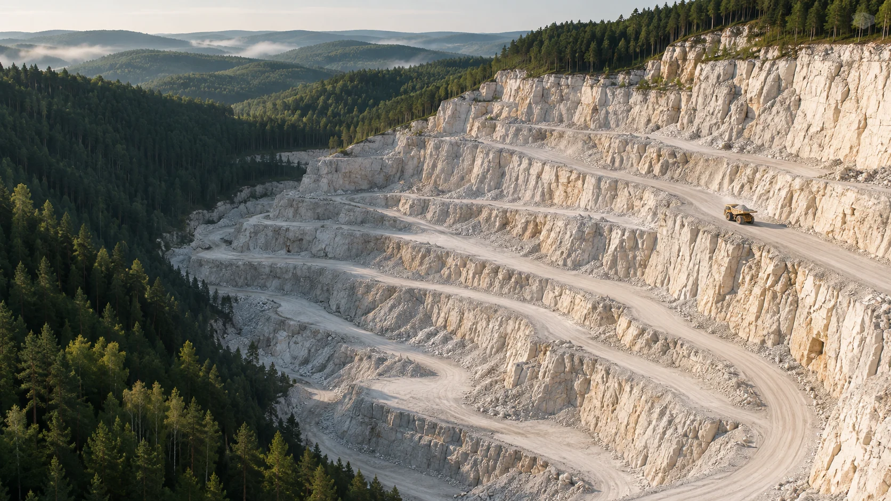

Легковые автомобили
Подбор в Китае, Японии и Южной Корее по классу, модели и комплектации.
Легковые автомобили, грузовой транспорт и спецтехника. Подбор машин, оборудования и запчастей.
Смотреть ассортимент19 позиций


Подбор автомобиля по задаче покупателя через партнёра. Для расчёта укажите комплектацию и город доставки.
Подбор автомобиля по задаче покупателя через партнёра. Для расчёта укажите комплектацию и город доставки.
Подбор автомобиля по задаче покупателя через партнёра. Для расчёта укажите комплектацию и город доставки.
Грузовая техника на шасси ISUZU с подбором по назначению.
Специальные автомобили на грузовом шасси под задачу заказчика.
Автовозы для перевозки автомобилей. Исполнение уточняется при подборе.
Автовозы для перевозки автомобилей. Исполнение уточняется при подборе.
Подбор бульдозера под условия объекта через партнёра по поставке техники.
В перечне карьерной и дорожной техники указаны пять производителей. Конкретную модель подбирают по задаче.
В перечне карьерной и дорожной техники указаны пять производителей. Конкретную модель подбирают по задаче.
Деталь сверяется по машине или артикулу. Остаток и срок поставки уточняются для каждой позиции.
Деталь сверяется по машине или артикулу. Остаток и срок поставки уточняются для каждой позиции.
Деталь сверяется по машине или артикулу. Остаток и срок поставки уточняются для каждой позиции.
Комплектация, поставщик и доставка согласуются по техническому заданию.

Комплектация, поставщик и доставка согласуются по техническому заданию.
Комплектация, поставщик и доставка согласуются по техническому заданию.

Комплектация, поставщик и доставка согласуются по техническому заданию.
Комплектация, поставщик и доставка согласуются по техническому заданию.
Комплектация, поставщик и доставка согласуются по техническому заданию.
По этому запросу позиций нет.
Подбор в Китае, Японии и Южной Корее по классу, модели и комплектации.
Грузовые и специальные автомобили на шасси ISUZU. Автовозы LUXUDA и SAS (BLIZZARD).
Карьерные и дорожные машины KOMATSU, VOLVO, CAT, SANY и XCMG. Бульдозеры KOMATSU, CAT и SHANTUI.
Оригинальные детали и аналоги для карьерной, дорожной, строительной и грузовой техники. Подбор по модели, серийному номеру, VIN или артикулу.
Ходовые позиции — в Благовещенске. По другим деталям проверяются запасы на складах в Китае.
Дробильно-сортировочные комплексы, бетонные заводы, оборудование для переработки металлолома, станки для рукавов высокого давления и электростанции.
Подбор поставщика, сверка спецификации, приёмка груза и проверка комплектности. Партии можно объединить на складе.
Международная перевозка и таможенное оформление. Для негабаритной техники подбирается трал. Доставка по России и СНГ до согласованного адреса.